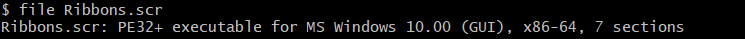

Screensavers
Back when I was a child, I was fascinated by screensavers, now a relic from the past. Imagine my surprise when I discovered (just recently, I must admit) that behind the scenes, a .scr file is just a Windows executable!

Well, that means that I could create my own screensaver, right? I just need to create a GUI app
that renders fullscreen. Technically yes, but it needs to support some arguments so it can
play nicely with the Control Panel configuration utility, namely /s for fullscreen mode, /c for
configuration, and /p for the preview mode.
We can ignore the /s if we make the app render on fullscreen by default. To keep things simple,
we only show a message dialog for /c indicating that we don't support configuration. /p is a
little more complicated, as it involves getting a window handle and doing some wiring to
make it work (that is, showing a preview of the screensaver on the Control Panel utility).
The next step is to decide what to render. We can try to replicate the now-missing
Starfield screensaver.
This effect is based on projecting the 3D coordinates of each star onto a 2D plane using the following equations, while decreasing the Z value (the star's depth) on each iteration:
star_x = star.X / star.Z + SCREEN_WIDTH / 2;
star_y = star.Y / star.Z + SCREEN_HEIGHT / 2;